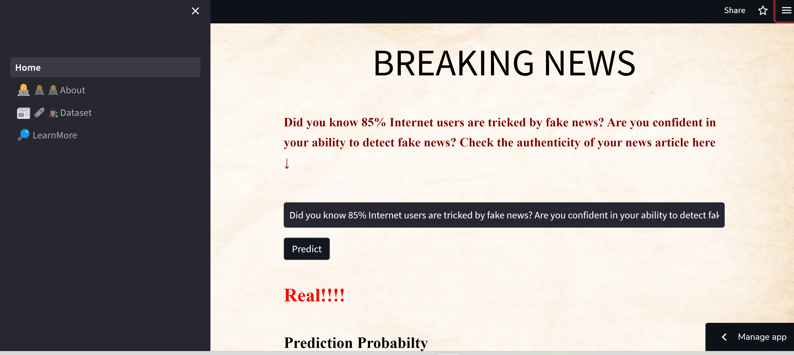
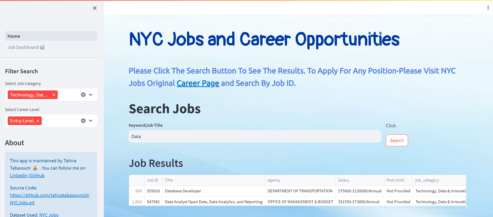

I am a data enthusiast with a strong interest in software engineering.
My curiosity for Machine Learning, Data Science, and Software development led me to build multiple projects with various frameworks.
I'm an organized and creative problem solver and demonstrated my skills in previous jobs.

I, in a team of three created a Machine Learning Model using Natural Language Processing to Predict Fake News.
The predictive model can detect whether a news title is Fake or Real with 80% prediction accuracy.
I selected variables for feature engineering, worked on
most of the backend, and highly contributed to the front- end web app design.

Developed this user-friendly application to make NYC job search easier and visualize current job market trends in NYC Gov Jobs.Application allows the user to filter by multiple criteria to search open job positions.
It allows the user to be interactive to visualize number of open positions by different categories and agencies hiring.Users can also create a resume cloud to highlight relevant skills and find suitable jobs.